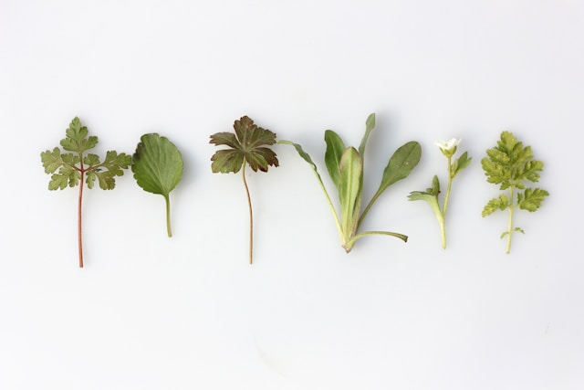

Handcrafted Holistic Goods
Welcome to Poisonberry Apothecary
We are a small-batch apothecary based in Chattanooga, Tennessee. Our mission is to craft natural remedies and holistic goods that promote wellness and connection to nature. Every soap, salve, and elixir is made with carefully chosen herbs and essential oils.
Whether you’re looking for a calming lotion or a revitalizing tea, each product is created with care and intention. We are proud to serve our local community with high-quality, sustainable goods.
